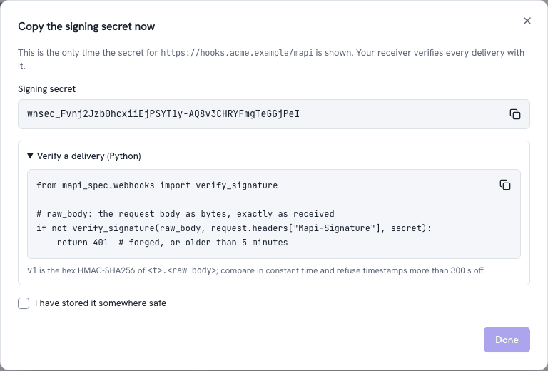

Receive webhooks v0.4¶
A webhook sends a small JSON envelope to your URL with POST. It
does this when a run finishes, a model version is ready, an endpoint is promoted or a score is
complete. In this tutorial, you create a webhook. You write a receiver that makes sure that each
delivery came from the platform. Then you see how it reacts to a new model, first on your
laptop. All persons can send a request to your URL. Thus the check is necessary.
mapi_client.webhooks.verify does the check in one call.
1. Create the webhook¶
You must have the project admin role (or a token with the webhooks:manage scope).
- Go to Integrations → Overview → Webhook → Set up a webhook (or the Webhooks tab → New webhook).
- Type an
httpsURL and a description. - Select the events.
- Copy the signing secret. The app shows the signing secret only one time.
Done stays disabled until you copy the secret or select the box that tells that you stored it.

Keep the secret in a place where your receiver can read it. For example, keep it as
MAPI_WEBHOOK_SECRET in your secret manager. The platform refuses URLs on private, loopback or
link-local addresses (WEBHOOK_URL_BLOCKED). It also refuses ports other than 443 and 8443.
Step 4 shows how a development stack can send to a receiver on your
computer.
2. What a delivery looks like¶
POST /mapi/webhook HTTP/1.1
Content-Type: application/json
Mapi-Signature: t=1792000000,v1=5257a869e7ecebeda32affa62cdca3fa51cad7e77a0e56ff536d0ce8e108d8bd
Mapi-Event-Id: evt_01jaf3k1m2n3p4q5r6s7t8v9w0
Mapi-Event-Type: endpoint.promoted
Mapi-Webhook-Id: whk_01jaf3h1j2k3m4n5p6q7r8s9t0
Mapi-Delivery-Id: whd_01jaf3m1n2p3q4r5s6t7v8w9x0
{"api_version": "v1", "created": "2026-10-15T09:30:00Z", "data": {"alias": "geo-mmm-prod", ...},
"id": "evt_01jaf3k1m2n3p4q5r6s7t8v9w0", "project": "growth", "tenant": "acme",
"type": "endpoint.promoted"}
v1 is the hex HMAC-SHA256 of the timestamp t, a dot and the raw body. The signing secret
of the webhook is the key. During the rotation of a secret, the header contains one v1 for
each active secret. Thus receivers that know one of the two secrets continue to work during the
24 hours of the rotation.
| Event | data |
|---|---|
run.succeeded, run.failed |
run_id, kind, state. If the run failed, also failure_class and code. model_version_id for a fit. |
model.version.ready |
model_id, model_version_id, ref, scorecard_overall (pass, warn or fail) |
endpoint.promoted |
alias, ref, revision, model_version_id, overridden |
score.completed |
run_id, endpoint (if it was an endpoint call), model_version_id, the names of the outputs |
tenant.deletion.completed |
deletion_id, requested_at, completed_at |
The envelope contains only ids and states. It never contains data values, signed URLs or secrets. To get other information, use the API.
3. Write the receiver¶
verify(headers, body, secret) does these steps:
- It finds
Mapi-Signaturein all types of headers object. The names are not case-sensitive. - It calculates the HMAC over the raw body again. It compares the HMAC with each
v1in constant time.secretcan be a list: the old secret and the new secret during a rotation. - It refuses a timestamp that is more than 300 seconds from your clock. This limits replays
of a captured delivery. To change the limit, use
tolerance=. - It parses the body as a
WebhookEnvelope. It does a check thatMapi-Event-Idnames the same event.
If a step fails, verify raises MapiError with the code WEBHOOK_SIGNATURE_INVALID. Answer
it with 401. is_valid(...) does the same check and returns a boolean. The function refuses
bodies that are larger than 256 KiB before it parses them.
Use the raw body
Verify the bytes exactly as they came in. Your framework can parse a body and serialise it
again (json.dumps(await request.json())). The spaces or the sequence of keys then
change, and the body never agrees with its signature.
from fastapi import FastAPI, HTTPException, Request
from mapi_client.webhooks import verify
from mapi_spec.errors import MapiError
app = FastAPI()
SECRET = os.environ["MAPI_WEBHOOK_SECRET"] # the secret shown once by `mapi webhooks create`
seen: set[str] = set() # use your database: deliveries are at least once
@app.post("/mapi/webhook")
async def mapi_webhook(request: Request) -> dict[str, str]:
body = await request.body() # the raw bytes: a re-serialised body fails the signature
try:
event = verify(request.headers, body, SECRET)
except MapiError:
raise HTTPException(status_code=401, detail="invalid signature") from None
if event.id in seen:
return {"status": "duplicate"}
seen.add(event.id)
if event.type == "endpoint.promoted":
print("now serving", event.data["ref"], "revision", event.data["revision"])
elif event.type == "run.failed":
print("run failed:", event.data["run_id"], event.data.get("code"))
return {"status": "ok"}
from flask import Flask, abort, request
from mapi_client.webhooks import verify
from mapi_spec.errors import MapiError
app = Flask(__name__)
SECRET = os.environ["MAPI_WEBHOOK_SECRET"] # the secret shown once by `mapi webhooks create`
handled: set[str] = set() # use your database: deliveries are at least once
@app.post("/mapi/webhook")
def mapi_webhook() -> dict[str, str]:
try: # request.get_data(): the raw body, before anything reads request.json
event = verify(request.headers, request.get_data(), SECRET)
except MapiError:
abort(401)
if event.id in handled:
return {"status": "duplicate"}
handled.add(event.id)
if event.type == "model.version.ready":
print("model ready:", event.data["ref"], "scorecard:", event.data["scorecard_overall"])
return {"status": "ok"}
The test suite runs the two receivers (docs/snippets/webhook_receiver.py and
webhook_receiver_flask.py). It sends deliveries with exactly the same signature as the
platform. Then it sends a replay, a body that was changed and an old timestamp.
4. Try it on your laptop¶
A make dev stack trusts a receiver on your own computer. The dev profile writes a temporary
CA and a certificate for 127.0.0.1 and localhost to .local/dev/webhook-tls/. It trusts
that CA and puts the two hosts on the allow-list
(configuration). The workspace of the repository has FastAPI
and uvicorn.
- Save the FastAPI receiver as
receiver.py. - Create a webhook for it from the repository.
- Export the secret that the command shows.
- Serve the receiver with that certificate:
uv run mapi webhooks create https://localhost:8443/mapi/webhook \
-e endpoint.promoted -e run.failed # prints the secret once
export MAPI_WEBHOOK_SECRET=whsec_… # that secret
uv run uvicorn receiver:app --port 8443 \
--ssl-certfile .local/dev/webhook-tls/cert.pem --ssl-keyfile .local/dev/webhook-tls/key.pem
Promote a fitted model to an endpoint. The Quickstart fits
a model. Promote it in the Integrations hub.
The receiver then prints now serving endpoint://<project>/<alias> revision 1.
In the web app, the Delivery log of the webhook shows the try, with the response code and
the time of your receiver. Send test sends the newest delivery again. Thus you can do a
check of a receiver that you changed. mapi webhooks replay <webhook_id> <delivery_id> does
the same. The M3 end-to-end suite gets each event type in this way.
You can also send a delivery with a correct signature to your receiver yourself, without a
stack. mapi_spec.webhooks.signature_header(body, [secret]) makes the header exactly as the
platform does.
Good receivers¶
- Answer fast with a
2xx. Then do the work in the background. After 5 seconds, the platform stops the delivery and tries it again (after 1 min, 5 min, 30 min, 2 h, 6 h, 12 h and 24 h). - Expect duplicates. Retries and replays send the same event again. Keep the
event.ids that you processed. - Answer
410 Goneto stop deliveries permanently. The platform disables the webhook immediately. After 20 failed events in a sequence, the platform also disables it.mapi webhooks lsshows the reason. To enable it again, useapi.webhooks.update(id, active=True). - Keep the secret secret. The app shows it one time. Keep it in your secret manager. To
rotate it, use
mapi webhooks rotate <id>. Give the two secrets to the receiver until the old secret expires. - Serve HTTPS on port 443 or 8443 under a public host name in production. The platform does not send deliveries to private, loopback or link-local addresses (see SSRF protection).
Next¶
- When you get
endpoint.promoted, refresh a Google Sheet or a cache. - Connect a pipeline. When you get
model.version.readywithscorecard_overall: pass, promote the model version with a token that has the scopeendpoints:promote(Endpoints and webhooks).